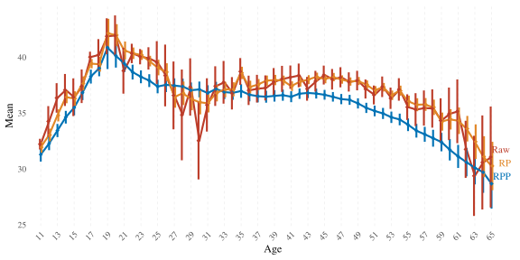
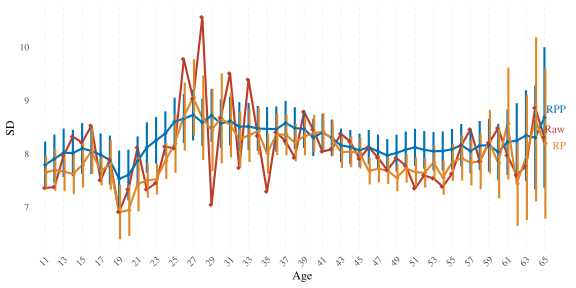
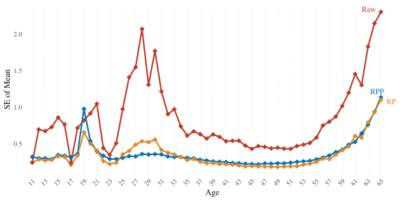
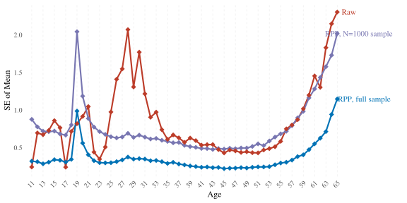

Additional analyses
2025-06-07
knitr::opts_chunk$set(
message = FALSE,
warning = TRUE,
include = TRUE,
error = TRUE,
fig.width = 8,
fig.height = 4
)
library(tidyverse)
library(haven)
library(ggrepel)
library(brms)
library(tidybayes)
library(rstan)
options(mc.cores = 4,
brms.backend = "cmdstanr",
scipen = 999,
digits = 4,
width = 120)
# windowsFonts(Times = windowsFont("Times New Roman"))
theme_set(theme_minimal(base_size = 12, base_family = "Times"))
load("../unshareable_data/preprocessed/tl.Rda")
load("data/preprocessed/de_census/census.Rda")
source("age_norm_comparisons.R")1 Model predictions without poststratification
Most continuous norming methods do not involve any weighting – relying only on the regression model to potentially estimates improve. The figures below show how our norming results would look without poststratifiying the regularised model’s prediction. Regularisation led to smoother and more precise mean estimates in each age group as compared to raw means even before poststratification. However, the regularised prediction model’s main function in RPP is facilitating poststratification’s work (i.e., the part that corrects for nonrepresentativeness). It is poststratification that causes estimates to actually differ on average from their raw counterparts. In our case, the model recognised the positive effect of education on CFT 20-R scores, and the poststratification corrected for the sample’s overrepresentation of more highly educated individuals as compared to the population. This underlies the difference between RP and RPP.
1.1 Fit/load the prediction model
brm_MAIN_nor_ints_no_educ_male <-
brm(bf(
cft ~ (1 | mig) + male + (1 | mig:male) + (1 | mig:educ) + s(age, by = educ),
sigma ~ (1 | mig) + (1 | educ) + male + s(age)
),
chains = 4,
seed = 810,
file = "../unshareable_data/brms/cft/brm_MAIN_nor_ints_no_educ_male",
data = tl) %>%
add_criterion("loo")1.2 Compare
RPP_vs_raw_vs_RP <- age_norm_comparisons(
brm_MAIN_nor_ints_no_educ_male,
RP = c("census", "norming_sample"),
prediction_transform = list(
function(x) round(pmax(0, pmin(56, x))) # for handling normal predictons
),
labels = c( "Raw", "RPP", "RP"),
palette = c(
"#BC3C29FF",
"#0072B5FF",
"#E18727FF"
),
output_file = "data/results/RPP_vs_raw_vs_RP.rds"
)
RPP_vs_raw_vs_RP[-1]## $overall_estimates
## # A tibble: 3 × 5
## Mean SE_of_Mean SD SE_of_SD Model
## <dbl> <dbl> <dbl> <dbl> <chr>
## 1 37.4 NA 8.19 NA Raw
## 2 35.7 0.116 8.59 0.0990 RPP_brm_MAIN_nor_ints_no_educ_male
## 3 37.4 0.0725 8.19 0.0587 RP_brm_MAIN_nor_ints_no_educ_male
##
## $means_plot
##
## $SDs_plot## Warning: Removed 55 rows containing missing values or values outside the scale range (`geom_segment()`).
##
## $SEs_plot
##
## $percentile_plotBesides the effect that poststratification has on means, it also smoothes SD estimates and considerably reduces SEs of both means and SDs.
2 One person per family
Since the TwinLife sample is composed of families, one could argue that the dependence among estimates of family members violates the i.i.d assumption and leads to underestimation of variance. To check the robustness of our results against this violation, we ran the same RPP but with only one person chosen randomly out of each family, thus eliminating the dependency.
2.1 Fit/load the prediction model
set.seed(14)
tl_1_per_fid <- tl %>%
group_by(fid) %>%
sample_n(1)
brm_MAIN_nor_ints_no_educ_male_1_per_fid <-
brm(bf(
cft ~ (1 | mig) + male + (1 | mig:male) + (1 | mig:educ) + s(age, by = educ),
sigma ~ (1 | mig) + (1 | educ) + male + s(age)
),
chains = 4,
seed = 810,
file = "../unshareable_data/brms/cft/brm_MAIN_nor_ints_no_educ_male_1_per_fid",
data = tl_1_per_fid) %>%
add_criterion("loo")
brm_MAIN_nor_ints_no_educ_male_1_per_fid## Warning: There were 35 divergent transitions after warmup. Increasing adapt_delta above 0.8 may help. See
## http://mc-stan.org/misc/warnings.html#divergent-transitions-after-warmup## Family: gaussian
## Links: mu = identity; sigma = log
## Formula: cft ~ (1 | mig) + male + (1 | mig:male) + (1 | mig:educ) + s(age, by = educ)
## sigma ~ (1 | mig) + (1 | educ) + male + s(age)
## Data: tl_1_per_fid (Number of observations: 4046)
## Draws: 4 chains, each with iter = 2000; warmup = 1000; thin = 1;
## total post-warmup draws = 4000
##
## Smoothing Spline Hyperparameters:
## Estimate Est.Error l-95% CI u-95% CI Rhat Bulk_ESS Tail_ESS
## sds(sageeducISCED3b:Uppersecondaryvocational_1) 13.71 7.58 2.86 31.61 1.00 796 1133
## sds(sageeducISCED1:Primary_1) 98.33 36.17 43.10 183.66 1.00 1598 1742
## sds(sageeducISCED2:Lowersecondary_1) 39.42 18.52 12.57 85.41 1.00 674 880
## sds(sageeducISCED3a:Uppersecondarygeneral_1) 6.85 6.52 0.13 24.19 1.01 954 716
## sds(sageeducISCED4:PostMsecondary_1) 9.22 6.24 1.15 25.28 1.00 1674 1928
## sds(sageeducISCED5a:Tertiarye.g.college_1) 12.82 7.35 2.62 30.00 1.00 769 1642
## sds(sageeducISCED5b:Tertiarye.g.coMopprogram_1) 7.51 4.28 1.80 17.72 1.00 2102 1291
## sds(sageeducISCED6:PhD_1) 14.73 7.72 5.21 34.51 1.00 2245 2429
## sds(sageeducST1:Primary_1) 9.65 11.27 0.33 35.87 1.00 2506 1738
## sds(sageeducST2:Lowersecondary_1) 8.59 8.63 0.24 29.78 1.00 2092 1757
## sds(sageeducST3:Intermediatesecondary_1) 24.68 15.11 7.41 65.38 1.00 1809 1784
## sds(sageeducST4:Uppersecondary_1) 23.88 10.28 11.07 52.13 1.00 2033 1241
## sds(sageeducST5:Comprehensiveschool_1) 27.20 14.86 10.92 66.28 1.00 2503 2237
## sds(sageeducST6:Otherschool_1) 25.83 15.03 9.87 61.74 1.00 2198 2058
## sds(sageeducST7:Nolongeratschool_1) 9.63 10.25 0.27 39.55 1.00 1679 899
## sds(sigma_sage_1) 0.23 0.30 0.01 1.04 1.00 950 1206
##
## Multilevel Hyperparameters:
## ~mig (Number of levels: 6)
## Estimate Est.Error l-95% CI u-95% CI Rhat Bulk_ESS Tail_ESS
## sd(Intercept) 2.36 1.22 0.83 5.66 1.00 822 803
## sd(sigma_Intercept) 0.11 0.06 0.04 0.27 1.00 1387 1707
##
## ~mig:educ (Number of levels: 86)
## Estimate Est.Error l-95% CI u-95% CI Rhat Bulk_ESS Tail_ESS
## sd(Intercept) 1.46 0.47 0.67 2.50 1.01 475 919
##
## ~mig:male (Number of levels: 12)
## Estimate Est.Error l-95% CI u-95% CI Rhat Bulk_ESS Tail_ESS
## sd(Intercept) 0.42 0.41 0.01 1.53 1.00 1377 1354
##
## ~educ (Number of levels: 15)
## Estimate Est.Error l-95% CI u-95% CI Rhat Bulk_ESS Tail_ESS
## sd(sigma_Intercept) 0.12 0.03 0.07 0.20 1.00 1416 2233
##
## Regression Coefficients:
## Estimate Est.Error l-95% CI u-95% CI Rhat Bulk_ESS Tail_ESS
## Intercept 36.24 1.27 33.66 38.69 1.00 696 629
## sigma_Intercept 1.98 0.06 1.86 2.11 1.00 1355 2344
## maleTRUE 1.68 0.44 0.86 2.69 1.00 2569 2102
## sigma_maleTRUE 0.00 0.02 -0.05 0.05 1.00 5771 2971
## sage:educISCED3b:Uppersecondaryvocational_1 -68.46 39.16 -157.52 -11.14 1.00 735 1209
## sage:educISCED1:Primary_1 -333.72 191.13 -747.28 10.46 1.00 1625 2323
## sage:educISCED2:Lowersecondary_1 -167.46 90.12 -374.37 -26.38 1.00 802 1633
## sage:educISCED3a:Uppersecondarygeneral_1 -7.36 21.07 -40.73 47.76 1.00 1919 1585
## sage:educISCED4:PostMsecondary_1 -8.53 23.67 -51.98 49.34 1.00 1925 1642
## sage:educISCED5a:Tertiarye.g.college_1 21.13 33.07 -26.12 100.75 1.00 728 1534
## sage:educISCED5b:Tertiarye.g.coMopprogram_1 -22.06 19.71 -69.36 10.25 1.00 1926 1706
## sage:educISCED6:PhD_1 15.37 34.63 -53.55 87.08 1.00 2103 2104
## sage:educST1:Primary_1 23.15 32.11 -43.87 88.55 1.00 1790 1472
## sage:educST2:Lowersecondary_1 42.57 30.21 -16.11 108.14 1.00 1510 1506
## sage:educST3:Intermediatesecondary_1 42.88 69.82 -96.91 191.54 1.01 1647 1551
## sage:educST4:Uppersecondary_1 25.76 65.45 -105.09 161.87 1.00 1213 646
## sage:educST5:Comprehensiveschool_1 28.52 75.71 -129.51 168.56 1.00 2007 1847
## sage:educST6:Otherschool_1 42.88 76.61 -98.03 196.17 1.00 1720 1440
## sage:educST7:Nolongeratschool_1 15.89 35.18 -54.54 101.57 1.00 1190 665
## sigma_sage_1 -0.03 0.52 -1.15 1.17 1.00 1289 688
##
## Draws were sampled using sample(hmc). For each parameter, Bulk_ESS
## and Tail_ESS are effective sample size measures, and Rhat is the potential
## scale reduction factor on split chains (at convergence, Rhat = 1).2.2 Compare
main_vs_1_per_fam <- age_norm_comparisons(
brm_MAIN_nor_ints_no_educ_male, brm_MAIN_nor_ints_no_educ_male_1_per_fid,
prediction_transform = list(
function(x) round(pmax(0, pmin(56, x))), # for handling normal predictons
function(x) round(pmax(0, pmin(56, x))) # for handling normal predictions
),
labels = c( "Raw", "RPP, main", "RPP, 1/fam"),
palette = c(
"#BC3C29FF",
"#0072B5FF",
"#6F99ADFF"
),
output_file = "data/results/main_vs_1_per_fam.rds"
)
ggsave( "figures/S09_main_vs_1_per_fam.jpeg", main_vs_1_per_fam$means_plot, width = 8, height = 4)
ggsave( "figures/S09_main_vs_1_per_fam_percentile.jpeg", main_vs_1_per_fam$percentile_plot, width = 8, height = 4)
main_vs_1_per_fam[-1]## $overall_estimates
## # A tibble: 3 × 5
## Mean SE_of_Mean SD SE_of_SD Model
## <dbl> <dbl> <dbl> <dbl> <chr>
## 1 37.4 NA 8.19 NA Raw
## 2 35.7 0.114 8.59 0.0973 RPP_brm_MAIN_nor_ints_no_educ_male
## 3 35.8 0.178 8.69 0.163 RPP_brm_MAIN_nor_ints_no_educ_male_1_per_fid
##
## $means_plot
##
## $SDs_plot## Warning: Removed 55 rows containing missing values or values outside the scale range (`geom_segment()`).
##
## $SEs_plot
##
## $percentile_plot
3 Excluding participants with ambivalent educational attainment category
Some participants were assigned an education category that combines two degrees with variable ISCED levels: “university of applied sciences, university of cooperative education”. While a degree from a university of applied sciences (Fachhochschule) would put one in ISCED level 5a, a degree from a university of cooperative education (Berufsakademie) is equivalent to ISCED level 5b. TwinLife assigns all people who have this ambivalent category to ISCED 5a. Here we test the robustness of our results against excluding those 357 participants.
3.1 Fit/load the prediction model
tl_no_berufsakad_with_fachhochschule <- tl %>%
filter(!(eca0108 == "level 5a" & eca0230 == 8))
brm_MAIN_nor_ints_no_educ_male_no_berufsakad_with_fachhochschule <-
brm(bf(
cft ~ (1 | mig) + male + (1 | mig:male) + (1 | mig:educ) + s(age, by = educ),
sigma ~ (1 | mig) + (1 | educ) + male + s(age)
),
chains = 4,
seed = 810,
file = "../unshareable_data/brms/cft/brm_MAIN_nor_ints_no_educ_male_no_berufsakad_with_fachhochschule",
data = tl_no_berufsakad_with_fachhochschule) %>%
add_criterion("loo")
brm_MAIN_nor_ints_no_educ_male_no_berufsakad_with_fachhochschule## Warning: There were 56 divergent transitions after warmup. Increasing adapt_delta above 0.8 may help. See
## http://mc-stan.org/misc/warnings.html#divergent-transitions-after-warmup## Family: gaussian
## Links: mu = identity; sigma = log
## Formula: cft ~ (1 | mig) + male + (1 | mig:male) + (1 | mig:educ) + s(age, by = educ)
## sigma ~ (1 | mig) + (1 | educ) + male + s(age)
## Data: tl_no_berufsakad_with_fachhochschule (Number of observations: 9630)
## Draws: 4 chains, each with iter = 2000; warmup = 1000; thin = 1;
## total post-warmup draws = 4000
##
## Smoothing Spline Hyperparameters:
## Estimate Est.Error l-95% CI u-95% CI Rhat Bulk_ESS Tail_ESS
## sds(sageeducISCED3b:Uppersecondaryvocational_1) 17.58 7.36 6.62 34.49 1.00 815 1336
## sds(sageeducISCED1:Primary_1) 78.32 28.09 37.46 144.14 1.00 1408 2067
## sds(sageeducISCED2:Lowersecondary_1) 43.47 17.95 17.42 87.28 1.00 832 1561
## sds(sageeducISCED3a:Uppersecondarygeneral_1) 14.93 9.36 1.19 37.61 1.00 974 1191
## sds(sageeducISCED4:PostMsecondary_1) 8.68 4.56 2.51 19.47 1.00 1664 2221
## sds(sageeducISCED5a:Tertiarye.g.college_1) 21.54 7.77 9.81 40.21 1.00 1013 1305
## sds(sageeducISCED5b:Tertiarye.g.coMopprogram_1) 9.48 4.53 3.36 20.88 1.01 1632 2375
## sds(sageeducISCED6:PhD_1) 15.68 6.89 6.58 33.22 1.00 2076 2537
## sds(sageeducST1:Primary_1) 10.69 12.36 0.33 42.21 1.00 2403 1394
## sds(sageeducST2:Lowersecondary_1) 12.42 10.35 0.80 38.37 1.00 2027 2011
## sds(sageeducST3:Intermediatesecondary_1) 24.01 14.56 8.88 64.95 1.00 2198 1808
## sds(sageeducST4:Uppersecondary_1) 26.85 11.05 12.99 55.55 1.00 2092 1811
## sds(sageeducST5:Comprehensiveschool_1) 29.76 17.82 11.91 80.46 1.00 1595 1194
## sds(sageeducST6:Otherschool_1) 24.69 13.40 10.49 57.60 1.00 2268 2180
## sds(sageeducST7:Nolongeratschool_1) 13.92 13.95 0.46 52.05 1.00 2518 2368
## sds(sigma_sage_1) 0.14 0.15 0.00 0.53 1.00 1076 1745
##
## Multilevel Hyperparameters:
## ~mig (Number of levels: 6)
## Estimate Est.Error l-95% CI u-95% CI Rhat Bulk_ESS Tail_ESS
## sd(Intercept) 2.78 1.27 1.32 6.00 1.00 1499 2076
## sd(sigma_Intercept) 0.09 0.05 0.04 0.21 1.00 1346 2313
##
## ~mig:educ (Number of levels: 89)
## Estimate Est.Error l-95% CI u-95% CI Rhat Bulk_ESS Tail_ESS
## sd(Intercept) 1.04 0.33 0.50 1.79 1.01 681 1035
##
## ~mig:male (Number of levels: 12)
## Estimate Est.Error l-95% CI u-95% CI Rhat Bulk_ESS Tail_ESS
## sd(Intercept) 0.23 0.23 0.01 0.81 1.00 1672 1849
##
## ~educ (Number of levels: 15)
## Estimate Est.Error l-95% CI u-95% CI Rhat Bulk_ESS Tail_ESS
## sd(sigma_Intercept) 0.10 0.03 0.06 0.17 1.00 1179 1823
##
## Regression Coefficients:
## Estimate Est.Error l-95% CI u-95% CI Rhat Bulk_ESS Tail_ESS
## Intercept 36.40 1.38 33.61 39.11 1.00 939 1577
## sigma_Intercept 1.98 0.05 1.88 2.09 1.01 1095 1535
## maleTRUE 1.42 0.26 0.94 1.97 1.00 2192 1847
## sigma_maleTRUE 0.01 0.01 -0.02 0.04 1.00 7975 2601
## sage:educISCED3b:Uppersecondaryvocational_1 -93.84 37.67 -178.09 -30.85 1.00 836 1523
## sage:educISCED1:Primary_1 -334.34 110.29 -570.20 -142.13 1.00 1725 1993
## sage:educISCED2:Lowersecondary_1 -234.97 91.25 -438.98 -79.16 1.00 897 1223
## sage:educISCED3a:Uppersecondarygeneral_1 7.15 35.16 -53.23 90.16 1.00 1477 1486
## sage:educISCED4:PostMsecondary_1 -7.59 22.00 -49.04 40.18 1.00 1381 1300
## sage:educISCED5a:Tertiarye.g.college_1 46.88 35.37 -15.66 124.56 1.01 1060 1431
## sage:educISCED5b:Tertiarye.g.coMopprogram_1 -37.07 23.43 -89.47 1.08 1.00 1253 1832
## sage:educISCED6:PhD_1 29.06 35.52 -38.33 105.54 1.00 1789 2033
## sage:educST1:Primary_1 31.46 39.95 -42.73 114.83 1.00 1382 909
## sage:educST2:Lowersecondary_1 52.38 38.50 -27.31 140.21 1.00 2012 1553
## sage:educST3:Intermediatesecondary_1 52.34 70.40 -69.41 196.95 1.00 1548 1289
## sage:educST4:Uppersecondary_1 37.62 72.18 -107.27 187.83 1.00 1781 1536
## sage:educST5:Comprehensiveschool_1 31.09 89.16 -161.75 187.38 1.00 1382 943
## sage:educST6:Otherschool_1 40.17 72.80 -111.64 178.00 1.00 1833 1578
## sage:educST7:Nolongeratschool_1 23.86 51.19 -64.76 151.01 1.00 1800 1516
## sigma_sage_1 0.01 0.33 -0.56 0.83 1.00 1833 1407
##
## Draws were sampled using sample(hmc). For each parameter, Bulk_ESS
## and Tail_ESS are effective sample size measures, and Rhat is the potential
## scale reduction factor on split chains (at convergence, Rhat = 1).3.2 Compare
main_vs_mod_isced <- age_norm_comparisons(
brm_MAIN_nor_ints_no_educ_male, brm_MAIN_nor_ints_no_educ_male_no_berufsakad_with_fachhochschule,
prediction_transform = list(
function(x) round(pmax(0, pmin(56, x))), # for handling normal predictons
function(x) round(pmax(0, pmin(56, x))) # for handling normal predictions
),
labels = c( "Raw", "RPP, main", "RPP, no BeAk/FHS"),
palette = c(
"#BC3C29FF",
"#0072B5FF",
"#6F99ADFF"
),
output_file = "data/results/main_vs_mod_isced.rds"
)
ggsave( "figures/S03_main_vs_mod_isced.jpeg", main_vs_mod_isced$means_plot, width = 8, height = 4)
ggsave( "figures/S03_main_vs_mod_isced_percentile.jpeg", main_vs_mod_isced$percentile_plot, width = 8, height = 4)
main_vs_mod_isced[-1]## $overall_estimates
## # A tibble: 3 × 5
## Mean SE_of_Mean SD SE_of_SD Model
## <dbl> <dbl> <dbl> <dbl> <chr>
## 1 37.4 NA 8.19 NA Raw
## 2 35.7 0.114 8.58 0.0976 RPP_brm_MAIN_nor_ints_no_educ_male
## 3 35.7 0.109 8.60 0.0996 RPP_brm_MAIN_nor_ints_no_educ_male_no_berufsakad_with_fachhochschule
##
## $means_plot
##
## $SDs_plot## Warning: Removed 55 rows containing missing values or values outside the scale range (`geom_segment()`).
##
## $SEs_plot##
## $percentile_plot
4 Excluding participants with missing migration background information
4.1 Fit/load the prediction model
tl_no_missing_mig <- tl %>%
filter(complete.cases(mig0520, mig2000, mig3100, mig3200))
brm_MAIN_nor_ints_no_educ_male_no_missing_mig <-
brm(bf(
cft ~ (1 | mig) + male + (1 | mig:male) + (1 | mig:educ) + s(age, by = educ),
sigma ~ (1 | mig) + (1 | educ) + male + s(age)
),
chains = 4,
seed = 810,
file = "../unshareable_data/brms/cft/brm_MAIN_nor_ints_no_educ_male_no_missing_mig",
data = tl_no_missing_mig) %>%
add_criterion("loo")
brm_MAIN_nor_ints_no_educ_male_no_missing_mig## Warning: There were 43 divergent transitions after warmup. Increasing adapt_delta above 0.8 may help. See
## http://mc-stan.org/misc/warnings.html#divergent-transitions-after-warmup## Family: gaussian
## Links: mu = identity; sigma = log
## Formula: cft ~ (1 | mig) + male + (1 | mig:male) + (1 | mig:educ) + s(age, by = educ)
## sigma ~ (1 | mig) + (1 | educ) + male + s(age)
## Data: tl_no_missing_mig (Number of observations: 9484)
## Draws: 4 chains, each with iter = 2000; warmup = 1000; thin = 1;
## total post-warmup draws = 4000
##
## Smoothing Spline Hyperparameters:
## Estimate Est.Error l-95% CI u-95% CI Rhat Bulk_ESS Tail_ESS
## sds(sageeducISCED3b:Uppersecondaryvocational_1) 16.69 8.85 4.95 37.84 1.00 481 1252
## sds(sageeducISCED1:Primary_1) 90.04 32.90 40.00 165.05 1.00 962 1236
## sds(sageeducISCED2:Lowersecondary_1) 47.83 26.35 13.36 114.65 1.01 357 882
## sds(sageeducISCED3a:Uppersecondarygeneral_1) 9.99 7.92 0.42 29.75 1.00 1144 2048
## sds(sageeducISCED4:PostMsecondary_1) 8.45 4.56 2.58 19.51 1.00 2014 2185
## sds(sageeducISCED5a:Tertiarye.g.college_1) 18.95 8.11 5.69 36.92 1.00 773 646
## sds(sageeducISCED5b:Tertiarye.g.coMopprogram_1) 9.33 4.78 3.36 20.85 1.00 1273 2281
## sds(sageeducISCED6:PhD_1) 16.88 7.76 7.32 37.06 1.00 2349 2531
## sds(sageeducST1:Primary_1) 9.84 10.98 0.30 37.95 1.00 2283 1558
## sds(sageeducST2:Lowersecondary_1) 12.01 11.15 0.40 38.70 1.00 1784 1785
## sds(sageeducST3:Intermediatesecondary_1) 19.49 11.03 6.63 48.46 1.00 2839 2505
## sds(sageeducST4:Uppersecondary_1) 25.48 11.08 11.83 54.94 1.00 3124 2473
## sds(sageeducST5:Comprehensiveschool_1) 28.03 15.75 11.30 71.32 1.00 2915 2195
## sds(sageeducST6:Otherschool_1) 24.28 12.80 9.95 56.76 1.00 2827 2470
## sds(sageeducST7:Nolongeratschool_1) 17.86 20.39 0.45 67.08 1.00 1776 1215
## sds(sigma_sage_1) 0.12 0.12 0.00 0.43 1.00 1429 1736
##
## Multilevel Hyperparameters:
## ~mig (Number of levels: 6)
## Estimate Est.Error l-95% CI u-95% CI Rhat Bulk_ESS Tail_ESS
## sd(Intercept) 2.91 1.27 1.36 6.16 1.00 1870 2327
## sd(sigma_Intercept) 0.10 0.06 0.04 0.25 1.00 1419 2083
##
## ~mig:educ (Number of levels: 89)
## Estimate Est.Error l-95% CI u-95% CI Rhat Bulk_ESS Tail_ESS
## sd(Intercept) 1.38 0.47 0.63 2.42 1.00 277 676
##
## ~mig:male (Number of levels: 12)
## Estimate Est.Error l-95% CI u-95% CI Rhat Bulk_ESS Tail_ESS
## sd(Intercept) 0.23 0.23 0.01 0.83 1.00 2107 2430
##
## ~educ (Number of levels: 15)
## Estimate Est.Error l-95% CI u-95% CI Rhat Bulk_ESS Tail_ESS
## sd(sigma_Intercept) 0.10 0.02 0.06 0.16 1.00 1384 1935
##
## Regression Coefficients:
## Estimate Est.Error l-95% CI u-95% CI Rhat Bulk_ESS Tail_ESS
## Intercept 36.20 1.42 33.48 39.12 1.00 1050 1369
## sigma_Intercept 1.97 0.06 1.86 2.09 1.00 1300 1447
## maleTRUE 1.49 0.27 0.97 2.05 1.00 3010 2240
## sigma_maleTRUE 0.01 0.02 -0.02 0.04 1.00 6231 1953
## sage:educISCED3b:Uppersecondaryvocational_1 -85.44 47.45 -194.19 -16.96 1.00 413 1020
## sage:educISCED1:Primary_1 -371.56 124.61 -629.77 -142.36 1.00 1447 1792
## sage:educISCED2:Lowersecondary_1 -252.83 138.24 -569.05 -52.25 1.01 373 979
## sage:educISCED3a:Uppersecondarygeneral_1 -3.35 27.08 -50.56 61.89 1.00 1655 1394
## sage:educISCED4:PostMsecondary_1 -7.53 22.32 -48.85 44.52 1.00 1925 1764
## sage:educISCED5a:Tertiarye.g.college_1 32.14 37.14 -30.06 113.32 1.01 836 1830
## sage:educISCED5b:Tertiarye.g.coMopprogram_1 -32.99 24.29 -91.42 3.92 1.00 953 1302
## sage:educISCED6:PhD_1 34.59 39.24 -37.18 118.72 1.00 1957 1925
## sage:educST1:Primary_1 23.26 37.61 -55.27 93.05 1.00 1580 899
## sage:educST2:Lowersecondary_1 40.21 43.18 -42.66 124.87 1.00 2053 977
## sage:educST3:Intermediatesecondary_1 36.39 52.51 -73.77 144.49 1.00 1998 1774
## sage:educST4:Uppersecondary_1 31.63 67.02 -103.79 171.79 1.00 2112 2204
## sage:educST5:Comprehensiveschool_1 25.14 78.02 -145.43 164.38 1.00 2173 1864
## sage:educST6:Otherschool_1 44.58 67.64 -89.38 183.71 1.00 2367 2031
## sage:educST7:Nolongeratschool_1 20.47 67.00 -96.70 184.03 1.00 1140 1066
## sigma_sage_1 -0.02 0.30 -0.59 0.64 1.00 2980 2505
##
## Draws were sampled using sample(hmc). For each parameter, Bulk_ESS
## and Tail_ESS are effective sample size measures, and Rhat is the potential
## scale reduction factor on split chains (at convergence, Rhat = 1).4.2 Compare
main_vs_complete_mig <- age_norm_comparisons(
brm_MAIN_nor_ints_no_educ_male, brm_MAIN_nor_ints_no_educ_male_no_missing_mig,
prediction_transform = list(
function(x) round(pmax(0, pmin(56, x))), # for handling normal predictons
function(x) round(pmax(0, pmin(56, x))) # for handling normal predictions
),
labels = c( "Raw", "RPP, main", "RPP, no missing mig"),
palette = c(
"#BC3C29FF",
"#0072B5FF",
"#6F99ADFF"
),
output_file = "data/results/main_vs_complete_mig.rds"
)
ggsave( "figures/S02_main_vs_complete_mig.jpeg", main_vs_complete_mig$means_plot, width = 8, height = 4)
ggsave( "figures/S02_main_vs_complete_mig_percentile.jpeg", main_vs_complete_mig$percentile_plot, width = 8, height = 4)
main_vs_complete_mig[-1]## $overall_estimates
## # A tibble: 3 × 5
## Mean SE_of_Mean SD SE_of_SD Model
## <dbl> <dbl> <dbl> <dbl> <chr>
## 1 37.4 NA 8.19 NA Raw
## 2 35.7 0.115 8.59 0.0970 RPP_brm_MAIN_nor_ints_no_educ_male
## 3 35.8 0.117 8.54 0.0992 RPP_brm_MAIN_nor_ints_no_educ_male_no_missing_mig
##
## $means_plot
##
## $SDs_plot## Warning: Removed 55 rows containing missing values or values outside the scale range (`geom_segment()`).
##
## $SEs_plot
##
## $percentile_plot
5 Model fit to N = 1000 random sample from TL
5.1 Fit/load the prediction model
set.seed(810)
tl_sample <- tl %>% sample_n(1000)
brm_MAIN_nor_ints_no_educ_male_sample <-
brm(bf(
cft ~ (1 | mig) + male + (1 | mig:male) + (1 | mig:educ) + s(age, by = educ),
sigma ~ (1 | mig) + (1 | educ) + male + s(age)
),
chains = 4,
seed = 810,
file = "../unshareable_data/brms/cft/brm_MAIN_nor_ints_no_educ_male_sample",
data = tl_sample) %>%
add_criterion("loo")
brm_MAIN_nor_ints_no_educ_male_sample## Warning: There were 75 divergent transitions after warmup. Increasing adapt_delta above 0.8 may help. See
## http://mc-stan.org/misc/warnings.html#divergent-transitions-after-warmup## Family: gaussian
## Links: mu = identity; sigma = log
## Formula: cft ~ (1 | mig) + male + (1 | mig:male) + (1 | mig:educ) + s(age, by = educ)
## sigma ~ (1 | mig) + (1 | educ) + male + s(age)
## Data: tl_sample (Number of observations: 1000)
## Draws: 4 chains, each with iter = 2000; warmup = 1000; thin = 1;
## total post-warmup draws = 4000
##
## Smoothing Spline Hyperparameters:
## Estimate Est.Error l-95% CI u-95% CI Rhat Bulk_ESS Tail_ESS
## sds(sageeducISCED3b:Uppersecondaryvocational_1) 7.34 5.38 0.45 21.30 1.00 1698 2108
## sds(sageeducISCED1:Primary_1) 16.14 18.49 0.54 62.86 1.00 1699 1925
## sds(sageeducISCED2:Lowersecondary_1) 7.96 9.32 0.23 35.29 1.00 1200 961
## sds(sageeducISCED3a:Uppersecondarygeneral_1) 29.36 20.04 1.73 77.74 1.00 1083 1472
## sds(sageeducISCED4:PostMsecondary_1) 5.69 5.98 0.23 19.72 1.00 2097 2023
## sds(sageeducISCED5a:Tertiarye.g.college_1) 10.24 8.64 0.40 32.41 1.00 987 1695
## sds(sageeducISCED5b:Tertiarye.g.coMopprogram_1) 8.67 6.26 0.51 23.97 1.00 1729 1769
## sds(sageeducISCED6:PhD_1) 6.36 6.17 0.20 22.03 1.00 2169 2190
## sds(sageeducST1:Primary_1) 7.70 8.01 0.20 28.10 1.00 2225 1438
## sds(sageeducST2:Lowersecondary_1) 10.13 11.41 0.27 39.67 1.00 2201 1997
## sds(sageeducST3:Intermediatesecondary_1) 8.02 8.17 0.29 27.93 1.00 2374 1951
## sds(sageeducST4:Uppersecondary_1) 24.02 11.80 9.91 57.15 1.00 3165 2084
## sds(sageeducST5:Comprehensiveschool_1) 13.13 10.14 0.72 39.42 1.00 1912 1824
## sds(sageeducST6:Otherschool_1) 11.54 11.15 0.41 38.64 1.00 1982 2090
## sds(sageeducST7:Nolongeratschool_1) 8.17 9.13 0.28 32.41 1.00 2395 1518
## sds(sigma_sage_1) 0.33 0.39 0.01 1.48 1.00 1411 1874
##
## Multilevel Hyperparameters:
## ~mig (Number of levels: 6)
## Estimate Est.Error l-95% CI u-95% CI Rhat Bulk_ESS Tail_ESS
## sd(Intercept) 2.83 1.90 0.19 7.23 1.00 1329 1888
## sd(sigma_Intercept) 0.18 0.14 0.05 0.50 1.00 1197 1378
##
## ~mig:educ (Number of levels: 67)
## Estimate Est.Error l-95% CI u-95% CI Rhat Bulk_ESS Tail_ESS
## sd(Intercept) 2.97 0.79 1.52 4.57 1.00 865 1136
##
## ~mig:male (Number of levels: 12)
## Estimate Est.Error l-95% CI u-95% CI Rhat Bulk_ESS Tail_ESS
## sd(Intercept) 2.52 1.31 0.31 5.55 1.00 895 1077
##
## ~educ (Number of levels: 15)
## Estimate Est.Error l-95% CI u-95% CI Rhat Bulk_ESS Tail_ESS
## sd(sigma_Intercept) 0.17 0.06 0.09 0.32 1.00 1465 2085
##
## Regression Coefficients:
## Estimate Est.Error l-95% CI u-95% CI Rhat Bulk_ESS Tail_ESS
## Intercept 36.21 2.06 32.26 40.26 1.00 2204 2131
## sigma_Intercept 1.97 0.14 1.74 2.22 1.00 1589 1363
## maleTRUE 1.28 1.97 -2.64 5.33 1.00 2508 1985
## sigma_maleTRUE 0.07 0.05 -0.03 0.17 1.00 5268 2972
## sage:educISCED3b:Uppersecondaryvocational_1 -27.49 27.12 -96.93 6.93 1.00 1944 1497
## sage:educISCED1:Primary_1 -10.52 76.87 -155.93 156.64 1.00 2382 1710
## sage:educISCED2:Lowersecondary_1 -23.75 39.81 -136.81 17.12 1.00 1154 787
## sage:educISCED3a:Uppersecondarygeneral_1 44.27 80.74 -94.03 220.99 1.00 1920 1664
## sage:educISCED4:PostMsecondary_1 -0.99 24.37 -39.37 50.81 1.00 1688 1119
## sage:educISCED5a:Tertiarye.g.college_1 10.78 28.15 -29.28 80.68 1.00 1360 1559
## sage:educISCED5b:Tertiarye.g.coMopprogram_1 -19.31 27.36 -87.17 20.11 1.00 1979 1746
## sage:educISCED6:PhD_1 21.98 26.62 -26.74 77.19 1.00 2430 1693
## sage:educST1:Primary_1 7.77 31.05 -55.04 69.48 1.00 1794 1528
## sage:educST2:Lowersecondary_1 36.13 39.18 -35.23 127.83 1.00 1804 1354
## sage:educST3:Intermediatesecondary_1 19.32 30.30 -41.70 80.90 1.01 1668 1276
## sage:educST4:Uppersecondary_1 25.88 66.92 -119.86 164.45 1.00 2417 1811
## sage:educST5:Comprehensiveschool_1 30.81 40.06 -49.20 123.24 1.00 2281 1798
## sage:educST6:Otherschool_1 29.43 38.68 -42.65 121.55 1.00 2122 1589
## sage:educST7:Nolongeratschool_1 -5.78 37.07 -66.38 65.74 1.00 1458 930
## sigma_sage_1 -0.13 0.79 -1.75 1.51 1.00 2244 1968
##
## Draws were sampled using sample(hmc). For each parameter, Bulk_ESS
## and Tail_ESS are effective sample size measures, and Rhat is the potential
## scale reduction factor on split chains (at convergence, Rhat = 1).5.2 Compare
main_vs_n_1000_sample <- age_norm_comparisons(
brm_MAIN_nor_ints_no_educ_male, brm_MAIN_nor_ints_no_educ_male_sample,
prediction_transform = list(
function(x) round(pmax(0, pmin(56, x))), # for handling normal predictons
function(x) round(pmax(0, pmin(56, x))) # for handling normal predictions
),
labels = c( "Raw", "RPP, full sample", "RPP, N=1000 sample"),
palette = c(
"#BC3C29FF",
"#0072B5FF",
"#7876B1FF"
),
output_file = "data/results/main_vs_n_1000_sample.rds"
)
main_vs_n_1000_sample[-1]## $overall_estimates
## # A tibble: 3 × 5
## Mean SE_of_Mean SD SE_of_SD Model
## <dbl> <dbl> <dbl> <dbl> <chr>
## 1 37.4 NA 8.19 NA Raw
## 2 35.7 0.115 8.58 0.0980 RPP_brm_MAIN_nor_ints_no_educ_male
## 3 36.1 0.327 8.80 0.263 RPP_brm_MAIN_nor_ints_no_educ_male_sample
##
## $means_plot
##
## $SDs_plot## Warning: Removed 55 rows containing missing values or values outside the scale range (`geom_segment()`).
##
## $SEs_plot
##
## $percentile_plotsessionInfo()## R version 4.4.1 (2024-06-14)
## Platform: x86_64-pc-linux-gnu
## Running under: Rocky Linux 9.5 (Blue Onyx)
##
## Matrix products: default
## BLAS/LAPACK: FlexiBLAS OPENBLAS; LAPACK version 3.11.0
##
## locale:
## [1] LC_CTYPE=en_US.UTF-8 LC_NUMERIC=C LC_TIME=en_US.UTF-8 LC_COLLATE=en_US.UTF-8
## [5] LC_MONETARY=en_US.UTF-8 LC_MESSAGES=en_US.UTF-8 LC_PAPER=en_US.UTF-8 LC_NAME=C
## [9] LC_ADDRESS=C LC_TELEPHONE=C LC_MEASUREMENT=en_US.UTF-8 LC_IDENTIFICATION=C
##
## time zone: Europe/Berlin
## tzcode source: system (glibc)
##
## attached base packages:
## [1] stats graphics grDevices utils datasets methods base
##
## other attached packages:
## [1] rstan_2.32.6 StanHeaders_2.32.10 tidybayes_3.0.7 brms_2.22.0 Rcpp_1.0.12
## [6] ggrepel_0.9.6 haven_2.5.4 lubridate_1.9.4 forcats_1.0.0 stringr_1.5.1
## [11] dplyr_1.1.4 purrr_1.0.2 readr_2.1.5 tidyr_1.3.1 tibble_3.2.1
## [16] ggplot2_3.5.1 tidyverse_2.0.0
##
## loaded via a namespace (and not attached):
## [1] tidyselect_1.2.1 svUnit_1.0.6 farver_2.1.2 loo_2.8.0 fastmap_1.2.0
## [6] TH.data_1.1-2 tensorA_0.36.2.1 digest_0.6.36 estimability_1.5.1 timechange_0.3.0
## [11] lifecycle_1.0.4 processx_3.8.4 survival_3.8-3 magrittr_2.0.3 posterior_1.6.0
## [16] compiler_4.4.1 rlang_1.1.4 sass_0.4.9 tools_4.4.1 utf8_1.2.4
## [21] yaml_2.3.8 knitr_1.47 labeling_0.4.3 bridgesampling_1.1-2 pkgbuild_1.4.4
## [26] plyr_1.8.9 cmdstanr_0.8.0 multcomp_1.4-26 abind_1.4-8 withr_3.0.0
## [31] grid_4.4.1 stats4_4.4.1 fansi_1.0.6 xtable_1.8-4 colorspace_2.1-1
## [36] inline_0.3.20 emmeans_1.10.6 scales_1.3.0 MASS_7.3-64 cli_3.6.3
## [41] mvtnorm_1.3-2 rmarkdown_2.27 ragg_1.3.2 generics_0.1.3 RcppParallel_5.1.9
## [46] rstudioapi_0.16.0 reshape2_1.4.4 tzdb_0.4.0 cachem_1.1.0 splines_4.4.1
## [51] bayesplot_1.11.1 parallel_4.4.1 matrixStats_1.5.0 vctrs_0.6.5 Matrix_1.7-1
## [56] sandwich_3.1-1 jsonlite_1.8.8 hms_1.1.3 arrayhelpers_1.1-0 systemfonts_1.1.0
## [61] ggdist_3.3.2 jquerylib_0.1.4 glue_1.7.0 ps_1.7.6 codetools_0.2-20
## [66] distributional_0.5.0 stringi_1.8.4 gtable_0.3.6 QuickJSR_1.5.1 munsell_0.5.1
## [71] pillar_1.9.0 htmltools_0.5.8.1 Brobdingnag_1.2-9 R6_2.5.1 textshaping_0.4.0
## [76] evaluate_0.24.0 lattice_0.22-6 highr_0.11 backports_1.5.0 bslib_0.7.0
## [81] rstantools_2.4.0 coda_0.19-4.1 gridExtra_2.3 nlme_3.1-166 checkmate_2.3.2
## [86] mgcv_1.9-1 xfun_0.45 zoo_1.8-12 pkgconfig_2.0.3